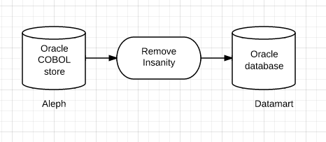

Bill Dueber, University of Michigan
Thank you, Margaret Kelly

All records with fixed field lang=eng (008/35-37) and with “&” in 245 $a or
245 $b that also have one or more 246 fields, none of which contain the
word “and.”
I would like to request a report for all items in:
Sublib = AAEL,
Collection = FUN
Please include
Title /
Author /
Call Number /
Barcode /
Loans /
Date last returned /
Date item created
Bill Dueber, bill@dueber.com